Start Here
1. What is This Course?
- This is a beginner course for middle school students who want to gain basic CS Skills
- Computer Science (CS) is the study of different problems and the ways we can code to solve them. Although there are countless different languages, each with their own unique features and drawbacks, these basic concepts can be applied to almost all of them
- CS allows us to approach complex problems and break it down into smaller pieces that we can manage, this is an important skill you'll need to use in many parts of your day-to-day
2. What Resources Do I Need?
Follow along and learn while typing! We will be using a free online compiler called Programiz for all of our programs. Link: https://www.programiz.com/python-programming/online-compiler/
Handy Dandy Programiz Guide:
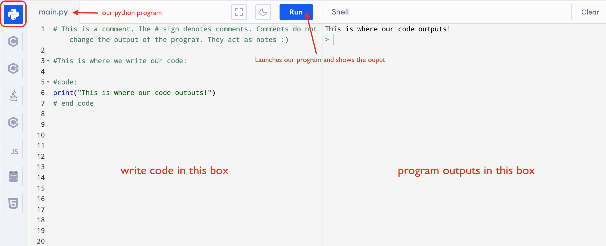
- Programiz Notes:
- Make sure Python is selected (top left).
- We write our code in the left box. This is our miniature program file. When you click the "Run" button, the program outputs in the right box. Use the clear button to clear output.
- If your program outputs an error, your code needs a fix. Common errors include: missing marks ( , : () # ), misspelled functions, and improper formatting
- Patience and time
- You will need to read and understand the modules and code that we have provided
- There will be a `Do It Yourself` challenge at the end of each module that we encourage students to complete on their own, without any notes
3. How Can I Make the Most of It?
-
Move in small chunks
- Instead of running through this course in a single day, go by each module day by day or week by week
- Make sure you're understanding the concepts and know how to apply them, rather than just copy and paste code
- Do the practice assignments
- Practicing is the only way to really perfect these concepts
- If you run into errors, try to debug the code and understand what each line does
- Follow the resources
- We've linked many different resources within each module to help you understand each piece correctly, use them whenever you need
- Break it down
- Nothing we present will be impossible since this course is carefully crafted for most beginner audiences with no prior experience
- Break down complex concepts/ homework assignments into pieces that you understand and can attack individually
4. Closing Notes
- We're glad you chose this course to guide you through the basics of CS
- We hope that you're able to learn and apply these new concepts in all aspects of your educational and professional career
- Good luck!
Variables and Printing
Choosing a Variable Name
- Only use alpha-numeric characters and underscores (A-z, 0-9, and _ )
- The name needs to start with a letter or underscore character
- Cannot start with a number
- Are case-sensitive (var, Var and VAR are three different variables)
Legal Variable Name Examples:
- myvar = “Sam”
- my_var = “Sam”
- my_var = “Sam”
Illegal Variable Name Examples:
- 7myvar = “Sam”
- my-var = “Sam”
- my var = “Sam”
Variable Declaration
Python has no command for declaring a variable so datatype are automatically assigned
- x = 3 -> automatically assumed to be an int
- y = “Tom” -> automatically assumed to be a string
type() function
To check the data type assigned to your variable, use the type() function
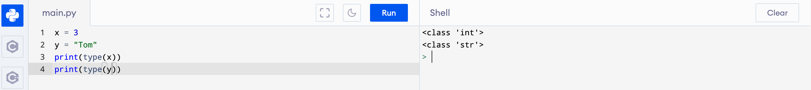
Casting
To specify the data type of a variable, use casting
- x = str(3) -> the integer is now turned into a string -> ‘3’
- y = int(‘3’) -> the string is now turned into a integer -> 3
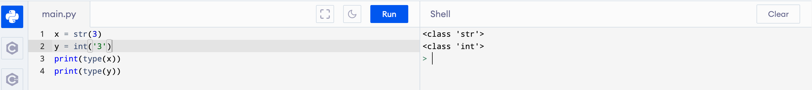
Printing
print() function allows you to output variables
Components: print(object(s), sep=separator, end=end, file=file, flush=flush)
- x = "Python"
- y = "is"
- z = "awesome"
Utilizing print systems:
Automatically assumed to use “ “ as separator
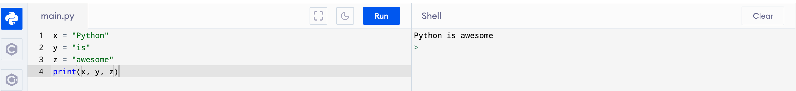
Use a different separator(“—“)
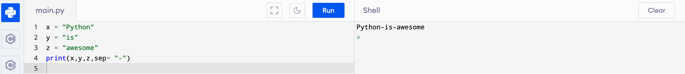
Can separate variables using “+” as well
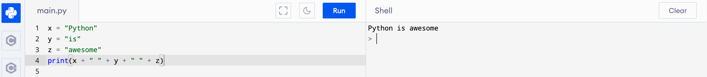
Carefully add separators when using “+”
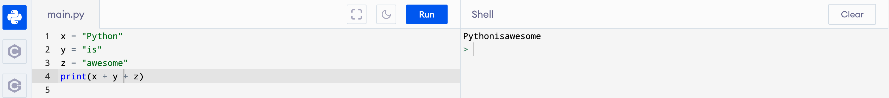
Arrays
An array is a special variable that can hold more than one value at a time.
Using an Array
When you have a list of items instead of making multiple variables like this:
name1 = “Fred”
name1 = “Fred”
name2 = “George”
name3 = “Sally”
Solution is to use an array
names = [“Fred”, “George”, “Sally”]
Accessing Array Elements
To access element in array:
names[0] -> this accesses element “Fred”
To change element in array:
names[0] = “Bob” -> this allows the first element to now be “Bob” instead of “Fred”
Loops
What Are Loops?
Loops are a sequence of instructions that are continually repeated until a certain condition is reached. We can use loops to repeat an instruction multiple times!

Types of Loops
For Loop
While Loop
Let's Make a For Loop!

Let's Make a While Loop!

Useful feature of a for loop in Python!
A useful feature of for loops in python is that you are able to iterate through a list/array without having to index the list.
Instead of doing this:

we can do this:

A for loop allows you to be able to access every item in a list/array even if you dont know how many items are in the list/array. This is very useful for things such as reading from files.
Loop Dangers!
Infinite Loop
An Infinite Loop is a continuous repetitive conditional loop that gets executed forever. Now an infinite loop will not necessarily run forever, it will eventually end when the computer runs out of memory. However, this is something you should avoid becuase your program will hang.
You can end up in an infinite loop if you don't have a condition that is met in your loop.
For Example:

In the above image you can see the loop will never exit because x will never be less than -2
Functions
What Are Functions?
Functions are structures that allow us to complete a series of actions in our program. We use them to perform tasks!
Example (read the comments!):
Types of Functions
- Built-in functions: functions that Python provides for us like print() and input()!
- Take a look at Python Docs
to see all of Python's built-in functions. Scroll down to see what they do!
- User defined functions: functions that programmers create to accomplish specific tasks in their program.
Function Structure:
Let's analyze our "do_something()" function from before:
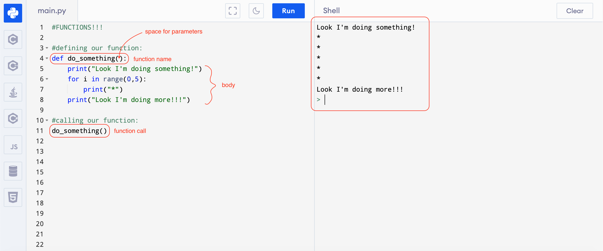
- Every function in Python starts with def, followed by the function name, and ():
- "Parameters" are optional inputs that the function uses and changes. Parameters go inside the parentheses. (more on that later)
- def makeTable():, def greet(name):, and def add(num1, num2): are all valid first lines of a user-defined function.
- Every function also contains a body.
- This is where we add statements to complete our tasks
- In the do_something() function, our body completes 3 tasks:
- prints "Look I'm doing something"
- prints 5 *s
- prints "Look I'm doing more!!!"
- Calling a function causes the function body to execute. To call a function, simply write the function name followed by parentheses. If the function takes parameters, put them inside the parentheses.
- makeTable(), greet("John"), and add(x, y) are all valid function calls.
Let's take a look at another example (with parameters!):
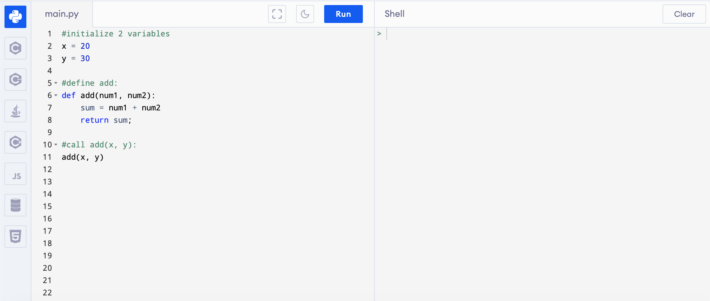
This add function takes in two parameters (num1, and num2).
num1 and num2 reserve spots for numbers or variables that contain numbers!
This function returns the sum of num1 and num2.
Notice that unlike do_something(), add(num1, num2) prints nothing to the console!
This is because the do_something() function prints within the function.
In order to see if our add function is working properly, we can call the function within a print statement!
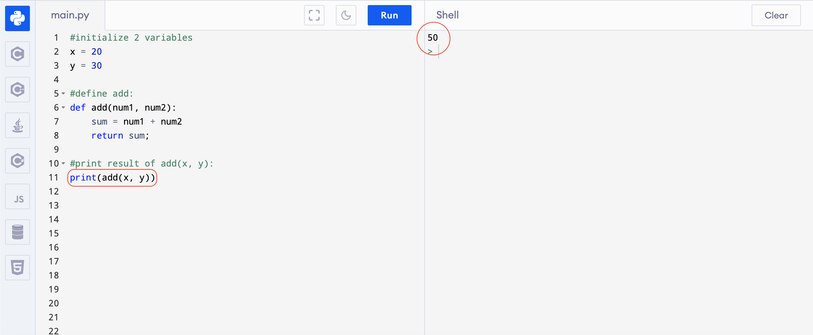
User Input!:
When programs need the user to provide information, it takes in user input. Here, we will learn how to use the built-in Python function input() to store what the user provides for us.
Below is the definition of a "greet" function that asks the user for their name and says "Hello user name , how are you?":
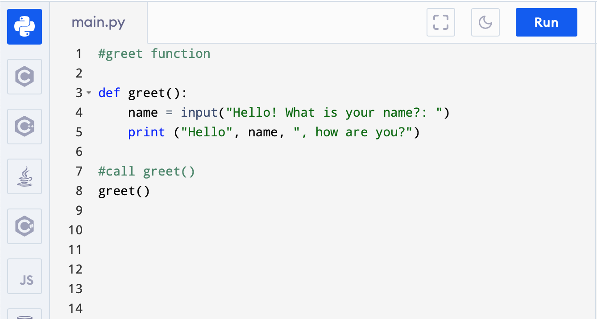
Inside of input(), we pass a prompt. This prompt shown to the user before they provide their input. We typically choose prompts that tell the user what they are supposed to do. This is what you should see when your program runs:
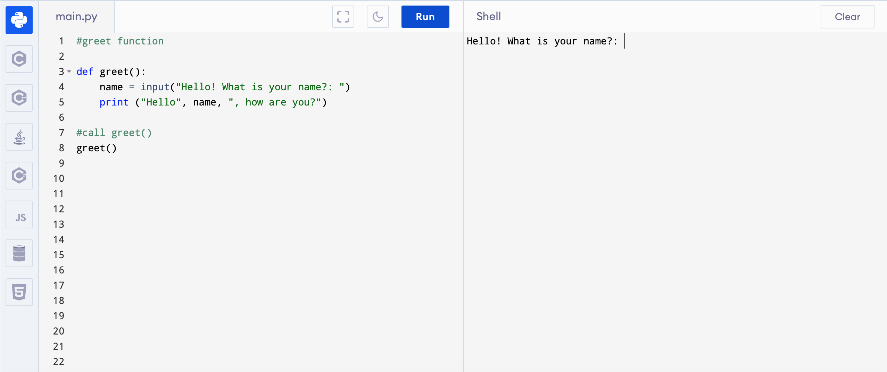
The computer is asking for your name! Do you see the cursor on the console? Write your name and hit enter!
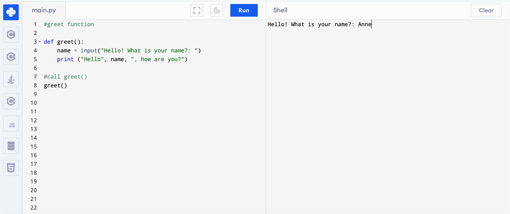
What really happens here when you hit enter is whatever you typed to the console is then stored in variable, name. Then, our function prints the greeting statement with whatever you entered to the console (see image below). Pretty cool right?
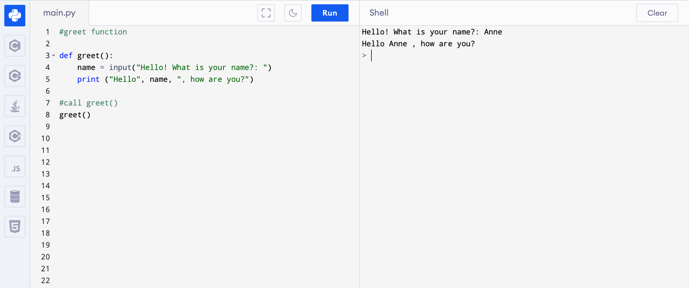
Challenge Problem: Cats or Dogs
Define a function named cats_or_dogs that takes no parameters. Ask the user "Which is better? cats or dogs: ". If the user inputs "cats", the console should respond with "Meow!". If the user responds with "dogs", the console should respond with "Bark!" If the user inputs something other that "cats" or "dogs", the console should tell them "You can only answer cats or dogs. Try again!", then the prompt appears again.
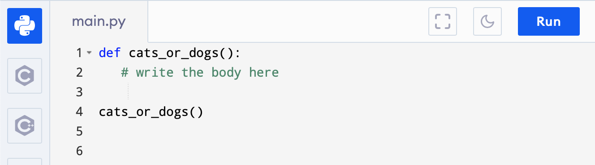
Hints:
Use conditionals since we are checking for different inputs. If this happens -> then do this
We use == to determine if two values are the same. Strings are values!
Solution
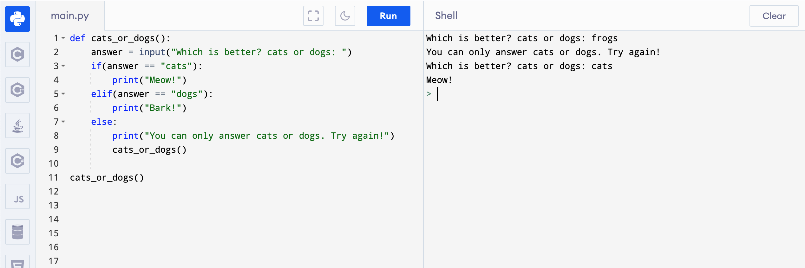
Don't be intimidated by the code. Read it line by line and try to understand what it's doing!
Summary:
- In this module, we covered:
- Functions: built-in & user defined
- Function Structure
- Parameters
- User Input
- * Hopefully, completing this module helped you understand the significance of functions. Functions are very common and important structures used in programming. We use functions in our programs to do things! What would programs be if they couldn't do things?
Where Can I Use These Skills?
So you've acquired a slew of new skills after this course, where can you use them? It is important to realize that no matter where you work or what the situation is, having a toolbox of skills will always be helpful, even if you don't directly apply the skills to that specific job.
Analytical Thinking/ Logic
- Day-to-day basis where you need to analyze what you need to do for a problem
- Classes, college, sports, and more
- Hard/Natural sciences like Chemistry and Physics
Breaking the Problem Down
- Classes like Science and Math
- Where you're dealing with a problem that seems too big to handle on its own
CS-Related Jobs
- Game Development
- Program in C# to create video games
- Software Engineer
- Program in a variety of languages in order to make apps, games, websites, and much more
- Machine Learning Engineer
- Usually in Python, ML engineers create some of the leading technologies we see
- Computer/Hardware Engineer
- Designing and understanding the hardware of a computer, you'll need a core understanding of CS
- Data Scientist
- Combining CS (usually Python or R) with statistics
Outside of CS
- Mathematician
- To help with large math problems, you can programatically solve the problem
- Chemist
- From 3D models of molecules to reaction simulators, you can create/use many softwares for Chemistry
- Researcher
- As a researcher with access to huge amounts of data, you'll need to sift through them using Data Science/ CS
- Physicist
- To simulate/project ideas to see if they're sound, you'll use many softwares
- Finance/ Business in General
- Algorithm trading or just making a prediction on whether something is a good investment or not